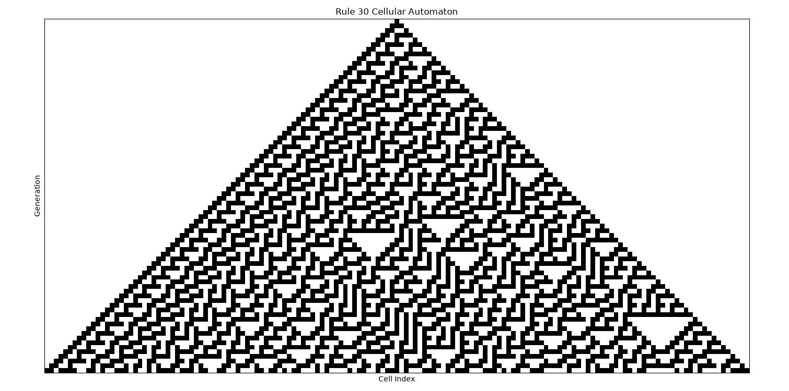
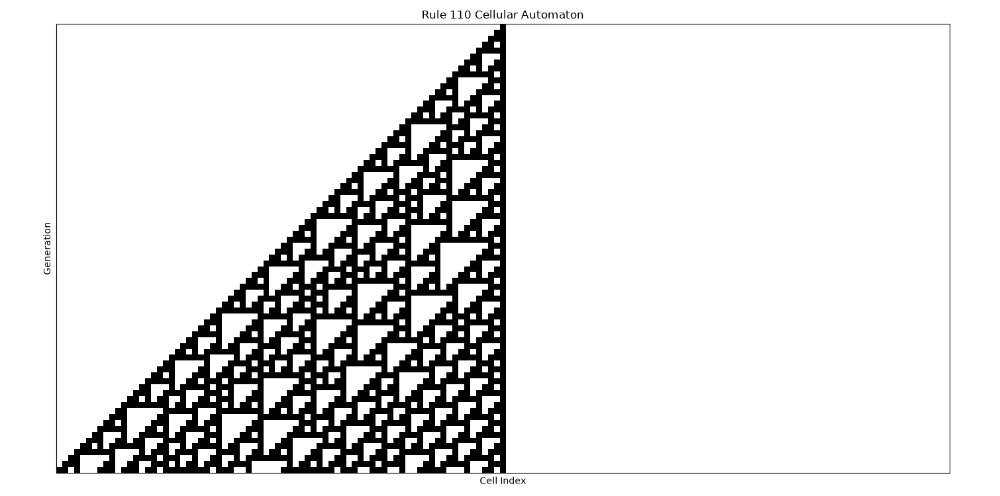
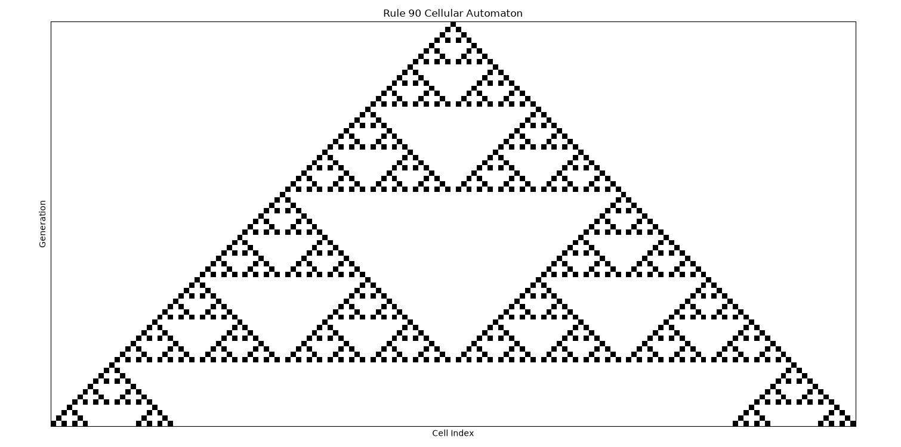
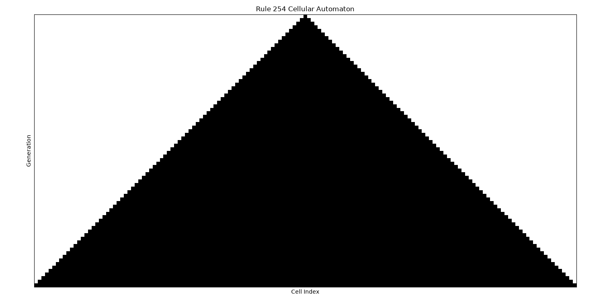
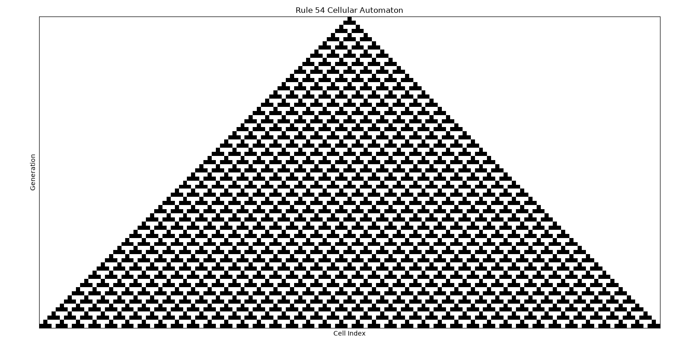

This report showcases simulations of various 1D Elementary Cellular Automata rules, as implemented by the autonomous entity.

Rule 30 is known for its chaotic behavior, producing complex, seemingly random patterns from a simple initial state.

Rule 110 is famous for its ability to support "gliders" and other complex structures, suggesting it is Turing complete.

Rule 90 generates fractal patterns, notably the Sierpinski triangle, demonstrating self-similarity and recursive structures.

Rule 254 exhibits simple growth, where the active cells expand uniformly, filling the space. This is a very simple, predictable rule.

Rule 54 shows complex behavior with interesting emergent patterns, though not as famously studied as Rule 110.